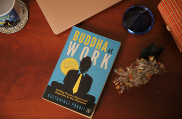

I am
Geetanjali Pandit
I am the author of Budha At Work
How can you bring your best and most successful self to work every day?
Told in a series of conversations with Gautam, and interspersed with tales from the Buddha’s life – along with real-life stories from people who’ve faced challenging situations in their jobs – Buddha at Work offers invaluable insight that will guide you through the challenges of the modern-day workplace.
This book unlocks the secrets to:
•
Keeping yourself motivated and energized, and being your productive best;
•
Managing stress and taking control of every workday situation;
•
Dealing with difficult bosses and co-workers or unforeseen situations like losing your job;
•
Channelling negativity into a more productive and positive attitude.
Drawn from the author’s decades of experience as head of HR in the country’s top organizations, and packed with easy-to-apply practical advice, Buddha at Work will help you achieve your true potential and find inspiration when you need it the most.
Writings
My book Budha At Work!
Geetanjali Pandit is an alumnus of XLRI, Jamshedpur and Lesley University, Cambridge, USA, where she worked with the legendary Professor John Kenneth Galbraith. Her career in Human Resources spans over twenty-two years, during which time she has been the CHRO for the India Today Group and the CPO for Zee Media Corporation Limited. At EIH Limited, Geetanjali played a global role in employer branding and in hospitality HR practices. An articulate speaker and an incisive thinker, she has written two books on career management and several articles in the Economic Times, the Financial Express and DNA. Currently she has forayed into skill-building and is a board member for a large organization. She credits her success to the application of Buddhist principles at the workplace.